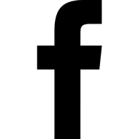
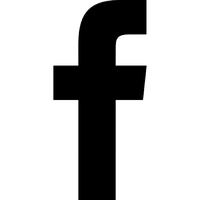

Bienvenido a la era de los zombies
Te presentamos STATE OF DECAY 2, una nueva forma de jugar y divertirte, armando tu propia comunidad de sobrevivientes para luchar contra los zombies
elige tu propio apocalipsis
Cuatro mapas de ciudades diferentes y cinco configuraciones de dificultad te permiten personalizar la experiencia a tu gusto. Ahora depende de ti reunir a los sobrevivientes, buscar recursos y construir una comunidad en un mundo postapocalíptico, un mundo en el que defines lo que significa sobrevivir a la última simulación de apocalipsis zombi.
Modos de juego
Descubre los distintos modos de juego que ofrece STATE OF DECAY 2
CO-OP
Sobrevive con tus amigos. puedes visitar las comunidades de tus amigos para ayudarlos y ganar recompensas para tu propia comunidad.
DAYBREAK
¡Defiéndete de un asedio de zombis en el que el tiempo es crítico en Daybreak! Juega como un soldado Red Talon luchando contra siete oleadas de zombis.
HEARTLAND
Heartland está ambientado ligeramente en el futuro en comparación con la campaña principal y presenta mutaciones de la plaga de sangre y personajes jugables personalizados.
Unete a la comunidad zombie
 
